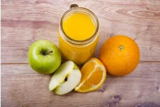

Laranja
Benefícios
Ajuda na saúde de todos contra gripes e
resfriados, ajudando a reforçar o sistema imune,
atua na prevenção de problemas
cardiovasculares também diminui a incidência do
câncer. O potássio presente ajuda na prevenção
da hipertensão arterial e AVC. As fibras que
também são de suma importância para o sistema
digestivo, ajudando na digestão e absorção dos
nutrientes (DE SOUZA, 2021).
Rica em vitamina C,
potássio, magnésio, betacaroteno. Além do mais,
também contêm vitamina B1, riboflavina,
niacina, vitamina B6, vitamina B9, vitamina B5,
fósforo, magnésio, manganésio, selénio, cobre,
além de fibras (DE SOUZA, 2021).
Receita: Vitamina de laranja com maçã
Tempo de preparo: Aproximadamente 15 min / Rendimento: 1 porção
Ingredientes
- 1/2 maçã picada;
- Suco de meia laranja;
- 200ml de leite desnatado;
- 1 colher (de sopa) de mel;
Modo de Preparo
- Descasque a laranja, corte ao meio e pique em pedaços.
- Corte a maçã em pedaços.
- Coloque todos os ingredientes no liquidificador e bata por 2 a 3 minutos e sirva.